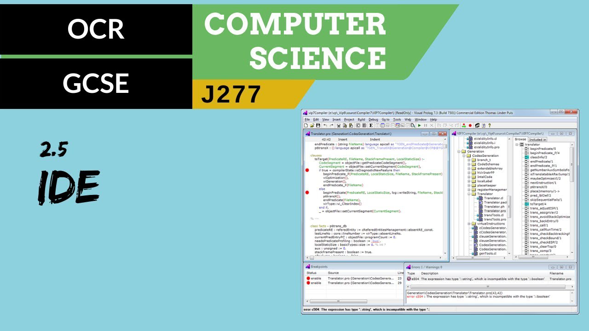
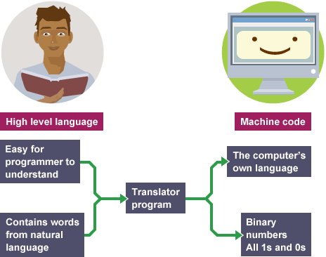

2.5 Programming Languages and Integrated Development Environments
Here you will revise the following:
- High-level vs. Low-level Languages
- Translators (Compilers, Interpreters, Assemblers)
- Integrated Development Environments (IDEs) functions
High-level vs. Low-level Languages
Programming languages are the tools we use to write instructions for computers. They vary in how close they are to human language versus machine code.
High-level Languages
High-level Language: A programming language that is closer to human language, easier to read, write, and understand. Each instruction often translates to many machine code instructions.
Examples: Python, Java, C++, Scratch.
Advantages: Easier to learn and use, faster to write code, portable across different computers.
Disadvantages: Requires a translator, less control over hardware, can be less efficient.
Low-level Languages
Low-level Language: A programming language that is closer to machine code, harder for humans to read and write. Includes Machine Code and Assembly Language.
Examples: Machine Code (binary 0s and 1s), Assembly Language.
Advantages: Gives direct control over hardware, can be very efficient.
Disadvantages: Difficult to learn and use, slow to write code, not portable (specific to a type of processor).
It's your turn!
Compare and contrast high-level and low-level programming languages. [4 Marks]
Translators
Computers only understand machine code. Translators are programs that convert code written in other languages into machine code.

Compilers
Compiler: Translates the entire high-level program into machine code all at once before execution. Creates an executable file.
Advantages: Execution is fast once compiled, errors are reported after the entire program is checked.
Disadvantages: Compilation can take time, difficult to debug (errors reported all at once).
Interpreters
Interpreter: Translates and executes the high-level program line by line.
Advantages: Easier to debug (stops at the first error), good for testing and development.
Disadvantages: Execution is slower than compiled code, requires the interpreter to run the program.
Assemblers
Assembler: Translates Assembly Language into machine code.
It's your turn!
Explain the difference between a compiler and an interpreter. [4 Marks]
Integrated Development Environments (IDEs)
Integrated Development Environment (IDE): A software application that provides comprehensive facilities to computer programmers for software development.
IDEs combine common developer tools into a single graphical user interface (GUI).

Key functions of an IDE:
- Code Editor: For writing and editing code, often with syntax highlighting.
- Error Diagnostics: Helps identify and locate errors in the code (syntax and sometimes runtime errors).
- Run-time Environment: Allows you to run your program directly within the IDE.
- Translators: Includes built-in compilers or interpreters.
- Autocompletion / Intellisense: Suggests code as you type, speeding up coding and reducing errors.
- Breakpoints and Debugging Tools: Allows you to pause program execution at specific points (breakpoints) and inspect variables to help find and fix bugs.
It's your turn!
Describe what is meant by 'error diagnostics' in an IDE and how it helps a programmer. [2 Marks]
Explain two other functions of an IDE, other than error diagnostics. [4 Marks]